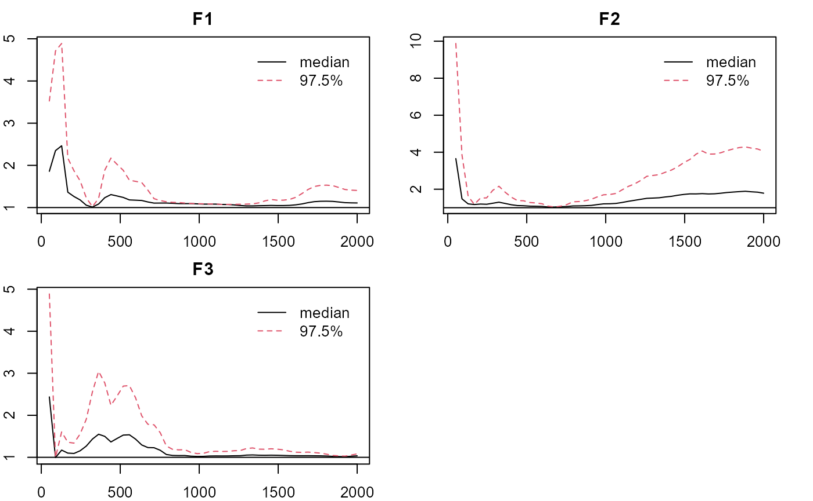

Note: the estimation process can be time consuming depending on the computing power. You can same some time by reducing the length of the chains.
Categorical Data w/o Local Dependence:
- Load the package, obtain the data, loading pattern (qlam), and setup the design matrix Q.
library(LAWBL) dat <- sim18ccfa40$dat head(dat) #> [,1] [,2] [,3] [,4] [,5] [,6] [,7] [,8] [,9] [,10] [,11] [,12] [,13] [,14] #> [1,] 2 2 3 2 2 2 1 1 2 2 1 1 1 1 #> [2,] 2 3 2 3 3 3 2 3 2 3 3 3 3 3 #> [3,] 3 4 2 2 3 3 2 2 3 3 3 3 2 2 #> [4,] 3 3 3 2 3 3 3 4 3 2 2 3 3 3 #> [5,] 1 2 2 3 1 1 1 2 2 1 1 1 2 2 #> [6,] 3 4 3 3 3 3 3 2 3 3 2 2 3 3 #> [,15] [,16] [,17] [,18] #> [1,] 1 1 2 1 #> [2,] 3 2 3 3 #> [3,] 2 2 3 2 #> [4,] 3 3 3 3 #> [5,] 2 1 1 1 #> [6,] 4 3 4 3 J <- ncol(dat) # no. of items K <- 3 # no. of factors qlam <- sim18ccfa40$qlam qlam #> [,1] [,2] [,3] #> [1,] 0.7 0.0 0.0 #> [2,] 0.7 0.0 0.0 #> [3,] 0.7 0.0 0.0 #> [4,] 0.7 0.0 0.0 #> [5,] 0.7 0.3 0.0 #> [6,] 0.7 0.3 0.0 #> [7,] 0.0 0.7 0.0 #> [8,] 0.0 0.7 0.0 #> [9,] 0.0 0.7 0.0 #> [10,] 0.0 0.7 0.0 #> [11,] 0.0 0.7 0.3 #> [12,] 0.0 0.7 0.3 #> [13,] 0.0 0.0 0.7 #> [14,] 0.0 0.0 0.7 #> [15,] 0.0 0.0 0.7 #> [16,] 0.0 0.0 0.7 #> [17,] 0.3 0.0 0.7 #> [18,] 0.3 0.0 0.7 Q<-matrix(-1,J,K); # -1 for unspecified items Q[1:2,1]<-Q[7:8,2]<-Q[13:14,3]<-1 # 1 for specified items Q #> [,1] [,2] [,3] #> [1,] 1 -1 -1 #> [2,] 1 -1 -1 #> [3,] -1 -1 -1 #> [4,] -1 -1 -1 #> [5,] -1 -1 -1 #> [6,] -1 -1 -1 #> [7,] -1 1 -1 #> [8,] -1 1 -1 #> [9,] -1 -1 -1 #> [10,] -1 -1 -1 #> [11,] -1 -1 -1 #> [12,] -1 -1 -1 #> [13,] -1 -1 1 #> [14,] -1 -1 1 #> [15,] -1 -1 -1 #> [16,] -1 -1 -1 #> [17,] -1 -1 -1 #> [18,] -1 -1 -1
- E-step: Estimate with the GPCFA-LI model (E-step) by setting LD=F. Only a few loadings need to be specified in Q (e.g., 2 per factor). Longer chain is suggested for stabler performance (burn=iter=5,000 by default).
m0 <- pcfa(dat = dat, Q = Q,LD = FALSE, cati = -1,burn = 2000, iter = 2000,verbose = TRUE) #> #> Tot. Iter = 1000 #> [,1] [,2] [,3] #> Feigen 2.767 3.216 3.030 #> NLA_lg3 7.000 8.000 8.000 #> Shrink 3.694 3.694 3.694 #> Ave. Thd: -1e+200 -1.449 0.01407 1.616 1e+200 #> Acc Rate: 0.515 0.5483 #> #> Tot. Iter = 2000 #> [,1] [,2] [,3] #> Feigen 2.542 5.487 4.405 #> NLA_lg3 6.000 8.000 7.000 #> Shrink 3.486 3.486 3.486 #> Ave. Thd: -1e+200 -1.527 -0.02694 1.539 1e+200 #> Acc Rate: 0.5191 0.555 #> #> Tot. Iter = 3000 #> [,1] [,2] [,3] #> Feigen 3.243 2.129 3.626 #> NLA_lg3 6.000 7.000 9.000 #> Shrink 3.417 3.417 3.417 #> Adj PSR 1.235 1.036 1.812 #> Ave. Thd: -1e+200 -1.538 0.001356 1.577 1e+200 #> Acc Rate: 0.5128 0.5545 #> #> Tot. Iter = 4000 #> [,1] [,2] [,3] #> Feigen 4.281 3.653 4.562 #> NLA_lg3 7.000 7.000 8.000 #> Shrink 3.341 3.341 3.341 #> Adj PSR 1.002 1.024 1.257 #> Ave. Thd: -1e+200 -1.5 -0.008524 1.589 1e+200 #> Acc Rate: 0.5133 0.5548 #> #> #Sign change: 0 0 0 0 0 0 #> user system elapsed #> 40.74 0.02 40.78 # summarize basic information summary(m0) #> $N #> [1] 500 #> #> $J #> [1] 18 #> #> $K #> [1] 3 #> #> $`Miss%` #> [1] 0 #> #> $`LD enabled` #> [1] FALSE #> #> $`Burn in` #> [1] 2000 #> #> $Iteration #> [1] 2000 #> #> $`No. of sig lambda` #> [1] 23 #> #> $`Adj. PSR` #> Point est. Upper C.I. #> F1 1.001969 1.011749 #> F2 1.023965 1.076504 #> F3 1.257485 1.904784 #> #> $`Cat Items` #> [1] 1 2 3 4 5 6 7 8 9 10 11 12 13 14 15 16 17 18 #> #> $`max No. of categories` #> [1] 4 #summarize significant loadings in pattern/Q-matrix format summary(m0, what = 'qlambda') #> [,1] [,2] [,3] #> I1 0.6201923 0.0000000 0.0000000 #> I2 0.7768669 0.0000000 0.0000000 #> I3 0.6882255 0.0000000 0.0000000 #> I4 0.6264071 0.0000000 0.0000000 #> I5 0.7318262 0.2713602 0.0000000 #> I6 0.6940781 0.3153947 0.0000000 #> I7 0.0000000 0.7175681 0.0000000 #> I8 0.0000000 0.7910802 0.0000000 #> I9 0.0000000 0.7074406 0.0000000 #> I10 0.0000000 0.7296847 0.0000000 #> I11 0.0000000 0.7023052 0.2288282 #> I12 0.0000000 0.7012889 0.3003277 #> I13 0.0000000 0.0000000 0.7871597 #> I14 0.0000000 0.0000000 0.6780440 #> I15 0.0000000 0.0000000 0.6865478 #> I16 0.0000000 0.0000000 0.7551998 #> I17 0.2447575 0.0000000 0.7534516 #> I18 0.0000000 0.0000000 0.6963927 #factorial eigenvalue summary(m0,what='eigen') #> est sd lower upper sig #> F1 3.204144 0.6399956 2.168233 4.500684 1 #> F2 3.541276 0.6921085 2.265590 4.880854 1 #> F3 3.511818 0.8460433 1.929814 5.227845 1 #thresholds for categorical items summary(m0,what='threshold') #> [,1] [,2] [,3] #> [1,] -1.703755 -0.06213722 1.587785 #> [2,] -1.636790 -0.10196876 1.623557 #> [3,] -1.518298 -0.05611896 1.538222 #> [4,] -1.565048 -0.08862435 1.544393 #> [5,] -1.543011 -0.02891165 1.404319 #> [6,] -1.578542 -0.06895461 1.564910 #> [7,] -1.517269 -0.03758055 1.410427 #> [8,] -1.465859 -0.03500043 1.567852 #> [9,] -1.533704 -0.06161427 1.546053 #> [10,] -1.424619 -0.01744482 1.475085 #> [11,] -1.489506 -0.02963514 1.655170 #> [12,] -1.575674 0.01591969 1.475730 #> [13,] -1.461899 -0.01618010 1.496939 #> [14,] -1.603563 0.04369185 1.834124 #> [15,] -1.463062 -0.01161572 1.446435 #> [16,] -1.483610 -0.05127774 1.542001 #> [17,] -1.550598 0.01166313 1.563012 #> [18,] -1.440383 -0.01353951 1.535058 #plotting factorial eigenvalue plot_eigen(m0) # trace
plot_eigen(m0, what='density') #density

plot_eigen(m0, what='APSR') #adj, PSRF

- C-step: Reconfigure the Q matrix for the C-step with one specified loading per item based on results from the E-step. Estimate with the GPCFA model by setting LD=TRUE (by default). Longer chain is suggested for stabler performance. Results are very close to the E-step, since there’s no LD in the data.
Q<-matrix(-1,J,K); tmp<-summary(m0, what="qlambda") cind<-apply(tmp,1,which.max) Q[cbind(c(1:J),cind)]<-1 #alternatively #Q[1:6,1]<-Q[7:12,2]<-Q[13:18,3]<-1 # 1 for specified items m1 <- pcfa(dat = dat, Q = Q, cati = -1,burn = 2000, iter = 2000,verbose = TRUE) summary(m1) summary(m1, what = 'qlambda') summary(m1, what = 'offpsx') #summarize significant LD terms summary(m1,what='eigen') summary(m1,what='threshold') #plotting factorial eigenvalue # par(mar = rep(2, 4)) plot_eigen(m1) # trace plot_eigen(m1, what='density') #density plot_eigen(m1, what='APSR') #adj, PSRF
- CFA-LD: One can also configure the Q matrix for a CCFA model with local dependence (i.e. without any unspecified loading) based on results from the C-step. Results are also very close.
Q<-summary(m1, what="qlambda") Q[Q!=0]<-1 Q m2 <- pcfa(dat = dat, Q = Q, cati = -1,burn = 2000, iter = 2000,verbose = TRUE) summary(m2) summary(m2, what = 'qlambda') summary(m2, what = 'offpsx') summary(m2,what='eigen') summary(m2,what='threshold') plot_eigen(m2) # Eigens' traces are excellent without regularization of the loadings
Categorical Data with Local Dependence:
- Load the the data, loading pattern (qlam), and LD terms, and setup the design matrix Q.
dat <- sim18ccfa41$dat head(dat) J <- ncol(dat) # no. of items K <- 3 # no. of factors sim18ccfa41$qlam sim18ccfa41$LD # effect size = .3 Q<-matrix(-1,J,K); # -1 for unspecified items Q[1:2,1]<-Q[7:8,2]<-Q[13:14,3]<-1 # 1 for specified items Q
- E-step: Estimate with the GPCFA-LI model (E-step) by setting LD=FALSE. Only a few loadings need to be specified in Q (e.g., 2 per factor). Some loading estimates are biased due to ignoring the LD. So do the eigenvalues.
m0 <- pcfa(dat = dat, Q = Q,LD = FALSE, cati = -1,burn = 4000, iter = 4000,verbose = TRUE) summary(m0) summary(m0, what = 'qlambda') summary(m0,what='eigen') summary(m0,what='threshold') plot_eigen(m0) # trace plot_eigen(m0, what='APSR')
- C-step: Reconfigure the Q matrix for the C-step with one specified loading per item based on results from the E-step. Estimate with the GPCFA model by setting LD=TRUE (by default). The estimates are more accurate, and the LD terms can be largely recovered.
Q<-matrix(-1,J,K); tmp<-summary(m0, what="qlambda") cind<-apply(tmp,1,which.max) Q[cbind(c(1:J),cind)]<-1 Q m1 <- pcfa(dat = dat, Q = Q, cati = -1,burn = 4000, iter = 4000,verbose = TRUE) summary(m1) summary(m1, what = 'qlambda') summary(m1,what='eigen') summary(m1, what = 'offpsx') summary(m1,what='threshold')
- CFA-LD: Configure the Q matrix for a CCFA model with local dependence (i.e. without any unspecified loading) based on results from the C-step. Results are better than, but similar to the C-step.